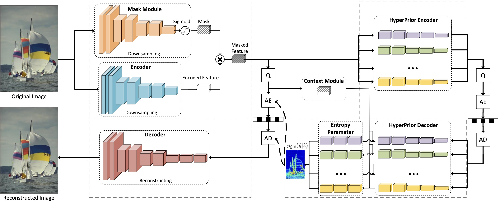

Image & Video Compression
Image & Video Compression
Information coding is a key technology in the field of multimedia computing and communication transmission. Its purpose is to eliminate all kinds of redundant information in visual signals, so as to store and transmit data in a more efficient way. The purpose of information coding for intelligent applications is no longer limited to saving storage space and transmission bandwidth, and providing users with high-definition visual services, but to provide efficient visual data representation for more intelligent visual analysis and processing needs.
Explore this area